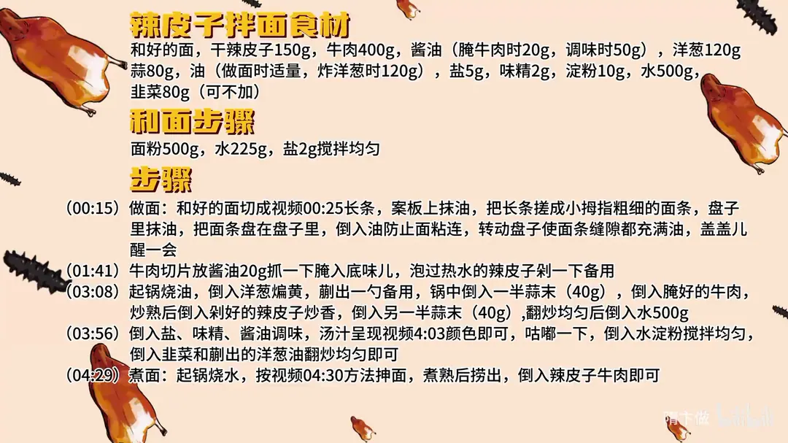

辣皮子拌面
隋卞一做。面粉 500g 配水 225g、盐 2g 和面，搓成小拇指粗的面条盘油醒发。牛肉 400g 用 20g 酱油腌底味，配 150g 干辣皮子、120g 洋葱，蒜末分两次下锅，最后浇头配抻面。
原视频：https://www.bilibili.com/video/BV1Ns4teyEpg
食材
和好的面、干辣皮子 等 16 样
| 类别 | 用料 | 用量 |
|---|---|---|
| 主料 | 和好的面 | 适量 |
| 和面 | 面粉 | 500g |
| 和面 | 水 | 225g |
| 和面 | 盐 | 2g |
| 主料 | 干辣皮子 | 150g |
| 主料 | 牛肉 | 400g |
| 腌牛肉 | 酱油 | 20g |
| 调味 | 酱油 | 50g |
| 辅料 | 洋葱 | 120g |
| 辅料 | 蒜 | 80g |
| 辅料 | 韭菜 | 80g（可不加） |
| 用油 | 油 | 做面时适量、炸洋葱时 120g |
| 调料 | 盐 | 5g |
| 调料 | 味精 | 2g |
| 调料 | 淀粉 | 10g |
| 调料 | 水 | 500g |
步骤
- 和面：面粉 500g、水 225g、盐 2g 搅拌均匀。
- 做面：和好的面切成长条，案板上抹油，把长条搓成小拇指粗细的面条；盘子里抹油，把面条盘在盘子里，倒入油防止面条粘连，转动盘子使面条缝隙都充满油，盖盖儿醒一会。
- 腌肉备料：牛肉切片，放 20g 酱油抓一下腌入底味；泡过热水的辣皮子剁一下备用。
- 炒浇头：起锅烧油，倒入洋葱煸黄，盛出一勺备用；锅中倒入一半蒜末（40g），倒入腌好的牛肉，炒熟后倒入剁好的辣皮子炒香，再倒入另一半蒜末（40g），翻炒均匀后倒入 500g 水。
- 调味：倒入盐、味精、酱油调味，汤汁呈现红亮颜色即可，咕嘟一下，倒入水淀粉搅拌均匀，倒入韭菜和盛出的洋葱油翻炒均匀即可。
- 煮面：起锅烧水，按视频方法抻面，煮熟后捞出，浇上辣皮子牛肉即可。
讲解要点
难度：★★★☆☆（难点是和面醒面与抻面，面醒不到位就拉不动）
为什么这么做
- 500g 面粉只配 2g 盐、225g 水：盐给面筋一点支撑，又不至于让面拉不动；水少面才筋道，水多就软塌。
- 搓成小拇指粗再盘油封住：面剂粗细一致，抻的时候才会一起变细；油封住表面既防粘也防干，醒的过程里面筋松弛了才好抻。
- 辣皮子先用热水泡软再剁、油要宽：干辣皮子直接下锅又硬又焦，泡软后才炒得出香、吃得到里面那层辣椒的「肉」；泡过的辣皮子吸油，油少了它发干发涩。
- 洋葱先煸黄、盛出一勺：洋葱的甜味先炼进油里，最后再把这一勺葱油泼回去，甜香才留得住。
- 蒜分两次下：第一次跟牛肉一起炒成底香，第二次在辣皮子炒香后再下，蒜香才有前后两个层次。
- 最后少量淀粉勾芡：汤汁挂得住面条，拌起来每根面都有味；芡厚了就成糊。
- 面煮好不过水：面表面的淀粉留着，浇头才挂得牢，这也是试吃时说「完全挂在每一根面条上面」的原因。
容易翻车
- 盐多或者醒不够，面一抻就断；醒好的面按下去是有回弹的。
- 面条盘的时候油没抹匀，醒完粘成一坨、分不开。
- 辣皮子泡不透就下锅，炒出来发硬、带涩味。
- 淀粉下手重，浇头变成糊，拌面就坨了。
- 韭菜放多了会抢辣皮子和牛肉的味，按口味可以不放。
热评补充
- 有观众给了更细的和面参数：高筋面粉用冷盐水和面，一碗面粉约 2g 盐，盐多了拉不动；和完醒半小时、每 10 分钟揉一次，面团光滑、有气泡就差不多。揉完擀成 1～1.5cm 的面饼，两面抹油盖保鲜膜再醒十几分钟，切 1cm 的条直接抻，拉不动就是盐大了或者没醒够。
原片尾卡

原片文案
AI 字幕校准稿
这期视频发完之后，每一个新疆孩子估计都馋哭了。辣皮子拌面，我准备再挑战一下白案，不信这期做完了还说我白案不行。和好的面放案板上，擀成近似长方块，切条；案板上抹上油，防止它案板粘，也防止它干，搓成小拇指粗细。
盘子里边抹上油，然后把咱们搓好的这个面条盘进去，把下边的全做成这样。来点油封住，其实这里边的油糟践不了，还可以再用；转一下，让它每一根面的缝里边全都沾上油，搁到里边让它醒一会儿。
我们切点牛肉，愿意吃肥的就买稍微带点油的，不爱吃肥的来点瘦的，这您可以随意，切片。接下来这就是新疆拌面的一个灵魂了——辣皮子，咱们拿那个热水泡一下，给它泡软，然后剁一下，随意剁，可以了，就这么简单。
牛肉里边放上酱油，抓一下，腌个底味。洋葱倒进去，这个油呢适当要宽一点，因为炒这个水泡辣皮子它吸油。你看色已经变了，边上就焦黄了吧，这会儿您崴出一勺来。放一瓣蒜，把牛肉倒进去，牛肉给它煸熟。
炒熟之后倒辣皮子，辣皮子的水分炒一炒，炒出香味，然后这时候再放一瓣蒜，这样蒜的香味啊才有层次感。调味放味精、酱油，酱油呢找点咸味，然后再找一找这汤汁的色，这个红红的颜色就可以了。
稍微咕嘟一下，来少量的淀粉，让这汤汁粘稠一下，这样容易挂到面上面。把韭菜倒进去，把炸的葱油倒进去——这个韭菜放进去，吃了以后更有层次感。好了，然后就煮面。锅里边烧上热水，一个手抻着一个手往外拽，这个手呢多少带点劲；这东西开锅就熟。
第一锅捞出来，还是挺劲道的。面条有点那个意思，我说实话，哪怕在新疆来说，你这面条也有个 80 分朝上，就是很好很好了。再说这个辣炒牛肉，这个菜的精华就是辣皮子。
我推荐大家有机会真的尝一尝新疆的辣皮子，它的口感介于干辣椒和彩椒中间：你吃那个表皮是干的，但明显能吃到里面辣椒的那个肉，甜味非常的明显，不太辣，有的只是辣椒的香味，非常非常之好吃和有口感。
因为咱是用洋葱煸的油，洋葱的那种甜味也非常的足；面条也没过水，完全挂在每一根面条上面。牛肉的香味、辣椒的甜味、洋葱的香和甜，非常融合，非常好吃，一定得在家试试。
但是我觉得韭菜还是多少有一点点抢味，按我的口味来说的话，我觉得还是可以不放的，其他都非常非常好。